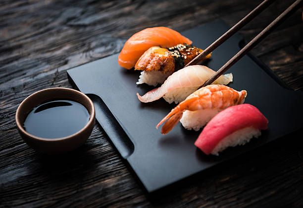
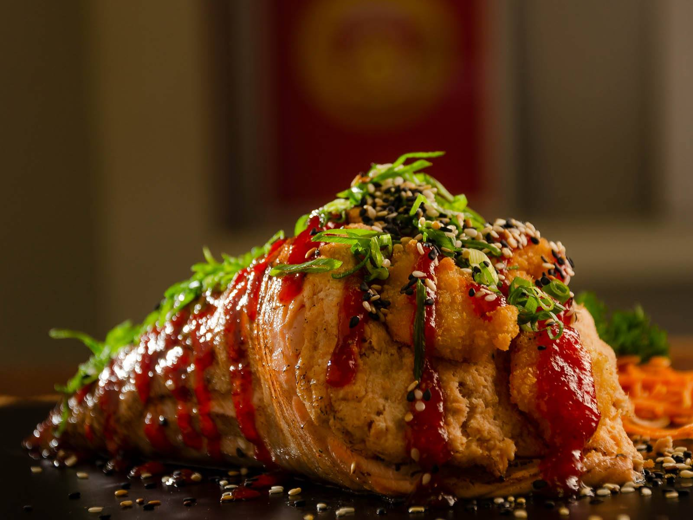

Ceviche:
Peixe fresco e frutos do mar marinados em suco de limão, misturados com cebola roxa, pimenta e coentro.

Gyoza:
Pequenos pastéis japoneses recheados com uma mistura saborosa de carne de porco, legumes e especiarias
Sunomono:
Uma salada japonesa clássica com fatias finas de pepino crocante marinadas em um molho agridoce de vinagre de arroz, resultando em um prato refrescante e revitalizante.
Tempurá:
Uma seleção de camarões, legumes frescos e cogumelos, levemente empanados em uma massa crocante.

Harumaki:
Rolinhos primavera crocantes recheados com uma combinação deliciosa de carne de porco, legumes frescos e temperos.
Takoyaki:
Bolinhas douradas e fofas de massa, recheadas com pedaços macios de polvo e outros ingredientes secretos
Sashimi:
Fatias finas de peixe fresco, como atum, salmão e peixe branco, servidas artisticamente em um prato.
Nigiri:
Pequenos pedaços de peixe fresco, como salmão, atum, camarão ou polvo, habilmente dispostos sobre almofadas de arroz levemente temperado.
Hossomaki:
Rolos de sushi com uma única cobertura de peixe ou legumes, cuidadosamente enrolados em uma folha fina de alga nori com arroz temperado.
Temaki:
Cones de alga nori recheados com uma mistura de arroz temperado, peixe fresco, legumes, e outros ingredientes saborosos.
Temaki maçaricado sem arroz:
Um cone de alga nori recheado com uma mistura de peixe fresco, legumes e outros ingredientes saborosos delicadamente maçaricado.
Água
Refrigerante
Sake
Saketini
Shoyu
Teriyaki
Tarê